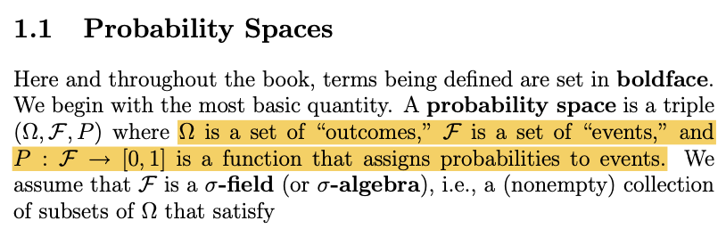
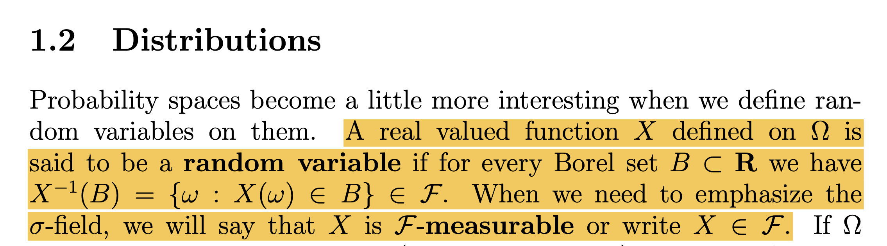
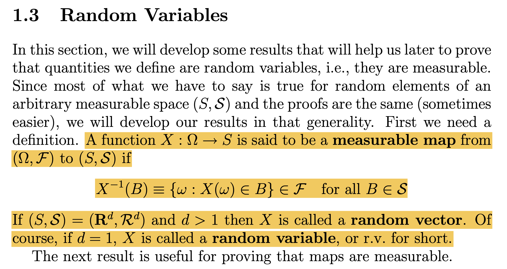

강의영상
youtube: https://youtube.com/playlist?list=PLQqh36zP38-yGgU_c-5m38ONMFujHvYLf
확률변수 오개념 정리
확률공간과 용어들
- 동전예제에서의 확률공간 \((\Omega,{\cal F},P)\)를 가정하고 용어를 정리해보자.
- outcomes: \(H\),\(T\)
- set of “outcomes”: \(\Omega=\{H,T\}\)
- event: \(\emptyset\), \(\{H\}\), \(\{T\}\), \(\{H,T\}\)
- set of “events”: \({\cal F}\)
- probabilites: \(P:{\cal F} \to [0,1]\)

확률변수의 불완전한 정의
- 확률변수: \(X:\Omega \to \mathbb{R}\)인 조금 특별한 성질을 가진 함수
- 정의역: \(\Omega\)
- 공역: \(\mathbb{R}\)
(예제1) 동전예제
1. outcomes1: \(H\),\(T\).
2. sample space: \(\Omega = \{H,T\}\)
3. event2: \(\emptyset\), \(\{H\}\), \(\{T\}\), \(\{H,T\}\).
4. \(\sigma\)-field: \({\cal F}=2^\Omega\)
5. probability measure function: \(P: {\cal F} \to [0,1]\) such that
- \(P(\emptyset) = 0\)
- \(P(\{H\}) = \frac{1}{2}\)
- \(P(\{T\}) = \frac{1}{2}\)
- \(P(\Omega) = 1\)
6. random variable: \(X: \Omega \to \mathbb{R}\) such that
- \(X(H)=1\)
- \(X(T)=0\)
만약에 편의상 \(\Omega=\{H,T\}=\{\omega_1,\omega_2\}\)와 같이 사용한다면
- \(X(\omega_1)=1\)
- \(X(\omega_2)=0\)
헷갈려 (1) (\(\star\))
- 질문1: 아래의 표현 중 옳은 것은?3
- \(X(H)=0\)
- \(P(\{H\})=\frac{1}{2}\)
- \(P(\{\omega_1\})=\frac{1}{2}\)^
- \(P(H)=\frac{1}{2}\)
- \(P(\{H,T\})=1\)
- \(P(\omega_1)=\frac{1}{2}\)
- 질문2: 질문1의 4번의 표현 많이 본적 있다. 예를들어서 고등학교에서 두 사건의 독립에 대해 배울때 아래와 같은 방식으로 표현했었다. // 출처: 네이버 블로그
두 사건 \(A\), \(B\)에 대하여 \(P(B|A) =P(B|A^c) =P(B)\) 이면 두 사건이 독립이라고 한다~~
그렇다면 이 표현은 틀린걸까?
(해설)
여기에서 사건 \(A\), \(B\)는 event을 의미하며 outcome을 의미하는게 아님. 즉 \(A\), \(B\)는 집합임.
암기: 확률은 항상 집합을 입력으로 받아야 함!!
- 질문3(\(\star\star\star\)): 수리통계 시간에서 아래와 같은 표현 본 적 있다.
\[P(X=1)=\frac{1}{2}\]
그런데 \(P\)의 입력으로는 집합이 들어가야하는데, \(X=1\)은 그냥 수식임. 그렇다면 이 표현은 틀린 표현일까??
(해설)
사실 \(P(X=1)\)의 의미는 아래와 같은 표현의 축약형이다.
\[P\big(\{\omega: X(\omega)=1 \} \big)\]
\(\{\omega: X(\omega)=1\} = \{\omega_1\} = \{H\}\) 를 의미하므로 결국
\[P(X=1)=P(\{\omega: X(\omega)=1\})=P(\{H\})\]
이 된다. 따라서 옳은 표현이다.
확률변수에 대한 통찰
- 아래와 같은 표현을 다시 관찰하자.
\[P(X=1)=P(\{\omega: X(\omega)=1\})=P(\{H\})\]
통찰1. 확률변수가 “함수”라는 사실을 떠올리고 \(1\)이라는 값이 확률변수의 “상(image)” 라는 사실을 떠올리면, \(\{\omega: X(\omega)=1\}\)은 1에 대한 “역상(inverse image)”이라고 해석할 수 있다.4
통찰2. 확률변수의 상은 \(\mathbb{R}\)에 맺히게 되고, 확률변수의 역상은 \(\Omega\)의 부분집합 중 하나에 맺히게 된다.
통찰3. 문제는 확률변수의 역상이 잴 수 있는 집합5에 맺힌다는 보장이 있냐라는 것이다… 즉 이 예제로 한정하면
\[\{\omega: X(\omega)=1\} \in {\cal F}\]
임을 보장해야 한다는 것이다.
통찰4. 당연히 이러한 보장을 할 수는 없어보인다. 따라서 \(X\)를 단지 그냥
- \(X: \Omega \to \mathbb{R}\)로 가는 함수
가 아니라
- \(X: \Omega \to \mathbb{R}\)로 가는 함수 & 역상이 항상 잴 수 있는 집합6이어야 함.
이라는 조건이 필요하다.
- 역상이 잴 수 있는 집합인 함수를 간단히 잴 수 있는 함수 (measurable function) 라고 한다.
헷갈려 (2) (\(\star\)) – 확률변수에 대한 오해
오해1: 학률변수 = 값이 랜덤으로 바뀌는 변수??
- 함수: \(y=f(x)\), \(f\): function, \(x\): input \(y\): output
- 확률변수: \(x=X(\omega)\), \(X\): function, \(\omega\): outcome7, \(x\): realization
- 확률변수는 함수이지만 보통 \(X(\omega)\)와 같이 쓰지 않고 \(X\)라고 쓴다. \(\Rightarrow\) 혼란의 이유
오해2: 확률변수는 결과가 랜덤으로 변하는 함수??
- 확률변수는 함수일 뿐임. 입력이 정해지면 출력이 고정임!
- 동전예제: 입력이 \(\omega=H\)이면 출력은 \(X(\omega)=1\), 입력이 \(\omega=T\)이면 출력은 \(X(\omega)=0\)으로 고정임!
오해3: 아니야.. 확률변수는 결과가 랜덤으로 바뀌는 느낌이 맞아. 아래의 예시를 봐!
\[X = \begin{cases} 0 & w.p. \frac{1}{2} \\ 1 & w.p. \frac{1}{2} \end{cases}\]
- \(X\)는 진짜 변수처럼 보이긴함.
- 심지어 변수의 값이 랜덤으로 변하는 것 같음.
(해설)
정확하게는 아래 표현이 맞다.
\[X(\omega) = \begin{cases} 0 & \omega \in \{H\} \\ 1 & \omega \in \{T\} \end{cases} \quad \text{where } P(\{H\}) = P(\{T\}) = \frac{1}{2}.\]
- 확률변수에 대한 오해2에 대한 추가설명
- 확률변수는 결과가 랜덤으로 변하는 함수가 아님, 확률변수는 함수일 뿐임. 입력이 정해지면 출력이 고정임!
- 동전예제: 입력이 \(\omega=H\)이면 출력은 \(X(\omega)=1\), 입력이 \(\omega=T\)이면 출력은 \(X(\omega)=0\)으로 고정임!
- 단지 입력 outcome이 실험에 따라 랜덤으로 변할 수 있는 것임!!
- 요약해보면,
- 확률변수는 확률과 관련없다.
- 간접적으로는 관련이 있다. \(\because\) \(X\)의 역상 = \(\Omega\)의 부분집합 = \(P\)의 정의역
확률변수
확률변수의 엄밀한 정의
- 확률변수 (머리속): \(X:\Omega \to \mathbb{R}\) 인 잴 수 있는 함수.
- 확률변수 (엄밀하게): 두 개의 잴 수 있는 공간 \((\Omega,{\cal F})\)와 \((\mathbb{R}, {\cal R})\)이 있다고 하자. 확률변수 \(X\)는 아래를 만족하는 함수 \(X:\Omega \to \mathbb{R}\) 이다.
\[\forall B \in {\cal R}: X^{-1}(B) = \{\omega:X(\omega)\in B \} \in {\cal F}\]
Note: \(\{\omega:X(\omega)\in B \} \in {\cal F}\) for all \(B \in {\cal R}\) 이라 쓰기도 함. 쓰는사람 마음~
정의에 대한 비판
- 왜 정의가 아래와 같지 않을까?
\[\forall B \subset \mathbb{R}: X^{-1}(B) = \{\omega:X(\omega)\in B \} \in {\cal F}\]
위의 질문을 위한 보충학습
(예제) 바늘이 하나 있는 시계
1. outcomes: \(0,\frac{\pi}{2},\pi,\frac{3\pi}{2},1,2,\dots\)
2. sample space: \(\Omega = [0,2\pi)\)
3. event: \(\emptyset\), \([0,\frac{2}{\pi})\), \(\{0\}\), \(\dots\)
4. \(\sigma\)-field: \({\cal F}\)
5. probability measure function: \(P\) such that
\[P([a,b)) = \frac{b-a}{2\pi}\]
where \(0\leq a<b<2\pi\).8
6. random variable: \(X: \Omega \to \mathbb{R}\) such that \(X(\omega)=\omega\)9
- 6을 주목하자. 만약에 비탈리집합 \(V \subset [0,1] \subset [0,2\pi)\)에 대한 inverse image는 비탈리집합 그 자체가 된다. 따라서 아래와 같이 된다.
\[P(X \in V)=P\big(\{\omega: X(\omega) \in V\}\big)=P(V)\]
- 그런데 집합 \(V\)는 르벡메져로는 잴 수 없으므로 \(P(V)\)와 같은 표현을 불가함.
- 따라서 아래의 정의에서 \(\forall B \in {\cal R}\) 대신에 \(\forall B \subset \mathbb{R}\)이라고 쓸 수 없다.
\[\forall B \in {\cal R}: X^{-1}(B) = \{\omega:X(\omega)\in B \} \in {\cal F}\]
- 결국확률변수를 정의하기 위해서 2개의 가측공간 \((\Omega, {\cal F})\), \((\mathbb{R}, {\cal R})\)이 필요함.
잴 수 있는 함수
- 교재의 정의1

- “\(X\) is \({\cal F}\)-measurable” 이라는 의미는, 모든 \(B \in {\cal R}\)에 대하여 \(B\)의 inverse image가 \({\cal F}\)-measurable 하다는 의미.
- \(X\)가 랜덤변수라는 것을 기호로 간단하게 \(X \in {\cal F}\) 라고 씀.
- 두개의 가측공간에 대한 언급은 매우 모호하게 되어있음.
- 교재의 정의2

- 측도의 개념을 정의하고 그 특수한 케이스로 확률측도를 정의하였듯이, 잴 수 있는 함수(measurable map)라는 개념을 정의하고 그 특수한 케이스로 확률변수(혹은 확률벡터)를 정의한다.
- 두개의 가측공간이 명확하게 명시되어 있어서 좀 더 이해하기 쉽다.
- 우리는 좀 더 명확한 의미전달을 위해
- \(X\)를 \((\Omega, {\cal F})\to (\mathbb{R},{\cal R})\)인 확률변수라고 하자
- \(X\)를 \((\Omega, {\cal F})\to (S,{\cal S})\)인 잴 수 있는 함수 (가측함수)라고 하자
와 같은 문장을 쓰겠다.
확률변수의 체크
(1) 아래와 같은 measurable space를 고려하자.
- \(\Omega=\{a,b,c,d\}\)
- \({\cal F} =\sigma({\cal A})\) where \({\cal A} = \{\{a\}\}\).
아래와 같은 function \(X:\Omega \to \mathbb{R}\), \(Y:\Omega \to \mathbb{R}\)을 고려하자.
- \(X(a)=1, X(b)=2, X(c)=3, X(d)=4\)
- \(Y(a)=1, Y(b)=2, Y(c)=2, Y(c)=2\)
아래의 물음에 답하라.
- \(X\)는 \((\Omega,{\cal F})\to (\mathbb{R},{\cal R})\)인 확률변수인가?
- \(Y\)는 \((\Omega,{\cal F})\to (\mathbb{R},{\cal R})\)인 확률변수인가?
(풀이)
\(X\)는 확률변수가 아님
집합 \(\{2\} \in {\cal R}\)에 대하여 \(\{\omega: X(\omega) \in \{2\}\}=\{b\} \not \in \sigma({\cal A})\) 이므로 \(X\)는 확률변수가 아님
\(Y\)는 확률변수임
\(\forall B \in {\cal R}\)에 대하여 \(Y^{-1}(B)\in {\cal F}\)가 성립함.
- \(\{\omega: Y(\omega) \in \emptyset\} = \emptyset \in \sigma({\cal A})\)
- \(\{\omega: Y(\omega) \in \{1\}\} = \{a\} \in \sigma({\cal A})\)
- \(\{\omega: Y(\omega) \in \{2\}\} = \{b,c,d\} \in \sigma({\cal A})\)
- \(\{\omega: Y(\omega) \in \{1,2\}\} = \{a,b,c,d\} \in \sigma({\cal A})\)
- 위에서 언급되지 않은 \(B \in {\cal R}\)에 대해서는 모두 \(Y^{-1}(B)=\emptyset \in \sigma({\cal A})\)가 성립함.
(2) 두개의 잴 수 있는 공간 \((\Omega, {\cal F})\)와 \((S,{\cal S})\)를 고려하자. 단,
- \(\Omega=\mathbb{R}\),
- \({\cal F} =\sigma({\cal A})\) where \({\cal A} = \{\mathbb{Q}\}\),
- \(S = \{0,1\}\),
- \({\cal S} = 2^{S}\).
아래와 같은 함수 \(X:\Omega \to S\)을 고려하라.
\[X(\omega) = \begin{cases} 0 & \omega \in \mathbb{Q}\\ 1 & \omega \in \mathbb{R} - \mathbb{Q} \end{cases}\]
\(X\)는 \((\Omega,{\cal F})\to(S,{\cal S})\)인 가측함수인가?
(풀이) 잴 수 있는 함수임.
Note: \(\sigma({\cal A})=\{\emptyset, \mathbb{Q}, \mathbb{Q}^c, \mathbb{R} \}, 2^S = \{\emptyset, \{0\}, \{1\}, \{0,1\}\}\)
잴 수 있는 함수임을 체크하기 위해서는 \(2^S\)의 모든 원소 \(B\)에 대하여 \(X^{-1}(B):= \{\omega : X(\omega) \in B\} \in {\cal F}\) 임을 확인하면 된다.
- \(B=\emptyset\) 일 경우: \(\{\omega: X(\omega) \in \emptyset\}=\emptyset \in \sigma({\cal A})\)
- \(B=\{0\}\) 일 경우: \(\{\omega: X(\omega) \in \{0\}\}=\mathbb{Q} \in \sigma({\cal A})\)
- \(B=\{1\}\) 일 경우: \(\{\omega: X(\omega) \in \{1\}\}=\mathbb{Q}^c \in \sigma({\cal A})\)
- \(B=\{0,1\}\) 일 경우: \(\{\omega: X(\omega) \in \{0,1\}\}=\mathbb{R} \in \sigma({\cal A})\)
이 문제에서 \((S,{\cal S})\)를 \((\mathbb{R}, {\cal R})\) 바꾸면 풀이의 약간만 수정하여 \(X \in {\cal F}\)임을 보일 수 있다.
(3) 두개의 잴 수 있는 공간 \((\Omega, {\cal F})\)와 \((S,{\cal S})\)를 고려하자. 단,
- \(\Omega=\mathbb{R}\),
- \({\cal F} =\sigma({\cal A})\) where \({\cal A} = \{\mathbb{Q}\}\),
- \(S = \{0,1\}\),
- \({\cal S} = 2^S\).
아래와 같은 함수 \(X:\Omega \to S\)을 고려하라.
\[X(\omega) = \begin{cases} 0 & \omega =0\\ 1 & \omega \neq 0 \end{cases}\]
즉 \(X\)는 \((\Omega,{\cal F})\to(S,{\cal S})\)인 가측함수인가?
(풀이) 잴 수 있는 함수가 아님. \(B=\{0\}\) 일 경우, \[\{\omega: X(\omega) \in B\}=\{0\} \notin \sigma({\cal A})\] 이므로 잴 수 있는 함수의 정의에 만족하지 않음.
이 문제에서 \((S,{\cal S})\)를 \((\mathbb{R}, {\cal R})\) 바꾸면 풀이의 약간만 수정하여 \(X \notin {\cal F}\)임을 보일 수 있다.